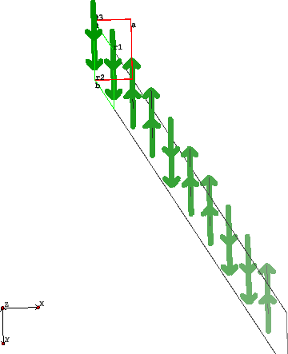
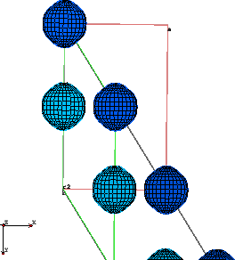
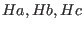
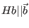
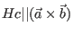
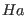
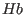

Next: Program hkl, hkl2d and Up: Programs for Graphical display Previous: Programs display_density - display Contents Index
The program display_densities can be used simply to popout spin/exchange field configuration and also to display a 3d animation of spin/moment/densities, even including a movie of excitations.
|

|
options are:
-c ... calculate chargedensity
-s ... calculate spindensity
-o ... calculate angular orbital momentum density
-m ... calculate magnetic moment density
-j ... calculate currentdensity
-p i j k ... calculate projection of spin/orbital/current/magnetic moment density
along direction i j k, e.g. 0 0 1
-div ... calculate divergence of spin/orbital/current/magnetic moment density
-S ... show arrow indicating spin
-L ... show arrow indicating orbital angular momentum
-M ... show arrow indicating magnetic moment
-P ... calculate phononic displacement
note, that in order to animate changes in the above quantities, the corresponding
switch has to be enabled in the mcdisp calculation (mcdisp.par) and the single ion
modules have to be capable of calculating the corresponding observables.
-prefix 001 ... use input file(s) results/001mc* instead of results/mc*
examples:
display_densities -c 2 0 0 1
...calculates the charge density at T=2K and H=(0,0,1) Tesla
display_densities -tI 2 0 0 1
... outputs a table with atomic positions and expectations values <I>
|

|
The program can be used to calculate (partial) chargedensity for the unfilled shells of magnetic ions in a magnetic unit cell, which has been calculated by mcphas and stored in mcphas.mf for a specific temperature and magnetic field. For the calculation of the charge density the formula are used as given in appendix L. In order to do so display_densities requires input files and the result of a full mcphas simulation. Alternatively, display_densities can calculate the spindensity, the orbital magnetic moment density, the total magnetic moment density (in Trammel gauge) and the (orbital) electric current density.
The program outputs a magnetic structure (and magnetic excitation) graphic/movie in the output files of different format: results/spins*.eps (postscript), results/spins*.fst (fp_studio), results/spins.out (ascii) and results/spins*.jvx (javaview).
Output files:
Note, in case of non-orthogonal axes the convention
for applied field 
is ,
 and  perpendicular to  and  .
.
The graphics output format can be fine tuned in results/graphic_parameters.set by spins_scale_moment, show_abc_unitcell, show_primitive_crystal_unitcell, show_magnetic_unitcell, show_atoms, scale_view_1, scale_view_2, scale_view_3, spins_wave_amplitude, spins_show_ellipses, spins_show_direction_of_static_moment. show_abc_unitcell, show_primitive_crystal_unitcell, show_magnetic_unitcell, show_atoms, show_density...
Technical information: the program display_densities is actually a script which calls spins (a program with the same arguments as display_densities which calculates the iso surfaces and stores it in format for the java based graphic program javaview and also as a grid. The way in which this is done is controlled by the parameter file results/graphic_parameters.set .... in order to display the results graphically the following java programs are called:
java javaview results/spins.jvx java javaview "model=results/spins.*.jvx" Animation.LastKey=16 background="255 255 255"